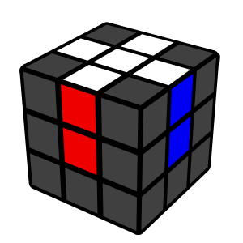
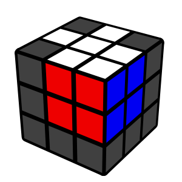
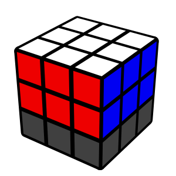

Instead of solving layer by layer, you can solve 2 layers at the same time. The concepts are harder than the beginner method, but with practice, F2L is much faster than the beginner method. Intuitive F2L means algorithms are not required, and the process should make sense. You can save around 20 moves per solve by using F2L instead of the beginner method.